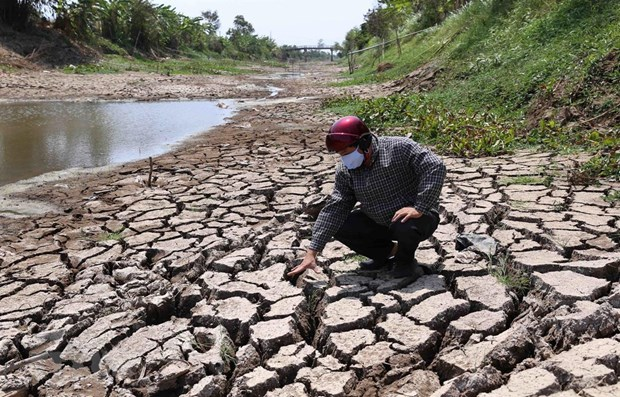
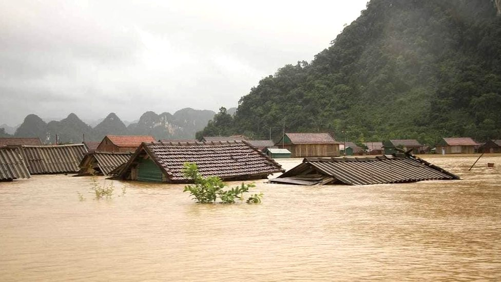
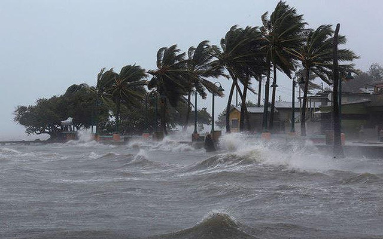
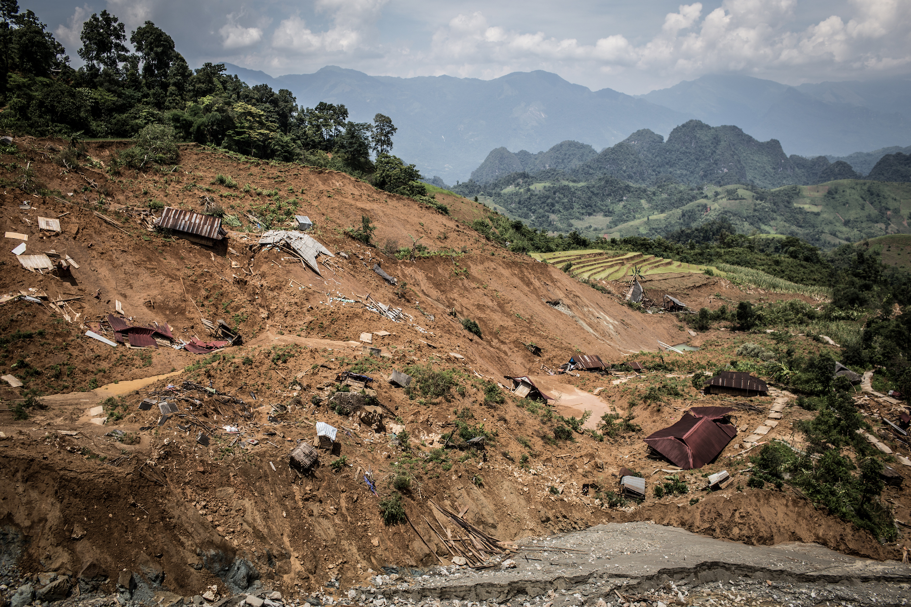
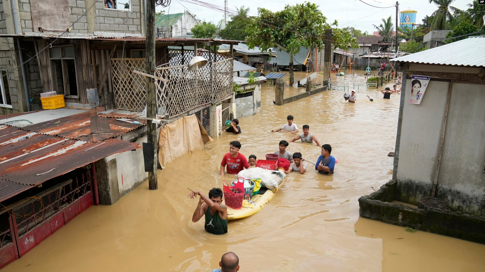

Drought
Vietnam’s Mekong Delta is the third-largest delta on Earth and home to nearly 18 million people, whose livelihoods rely mainly on agricultural and aquacultural production. Dry season droughts have become increasingly severe year over year, forcing the Government to declare a state of emergency and issue a call for international support.
- OpenDevelopment Vietnam

Landslides
Landslides and flash floods, riverbank and coastal erosions have caused serious damage to people's lives, properties, and public infrastructure, especially in some provinces.
- VietnamPlus

Typhoon
Central Vietnam is often in the path of tropical storms and depressions that form in the East Sea, which can intensify to form tropical cyclones known as typhoons.
-TheConversation

Flood
Flood damage data recorded shows that Vietnam is vulnerable to flood hazards. This has severe consequences for the Vietnamese people, especially in terms of an unacceptably high death toll. To an extent, the high level of vulnerability is related to an insufficient capacity to cope with natural hazards
-Corpenicus
